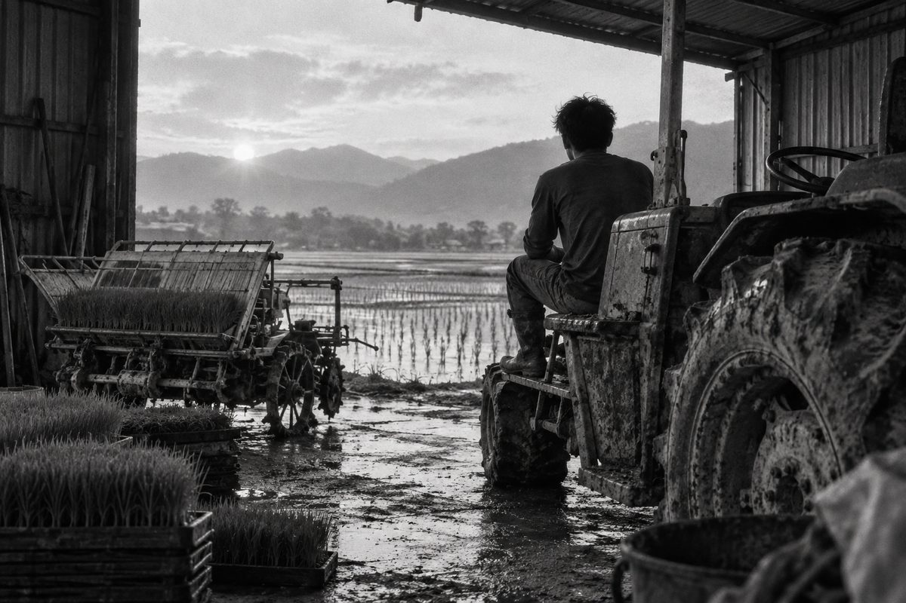
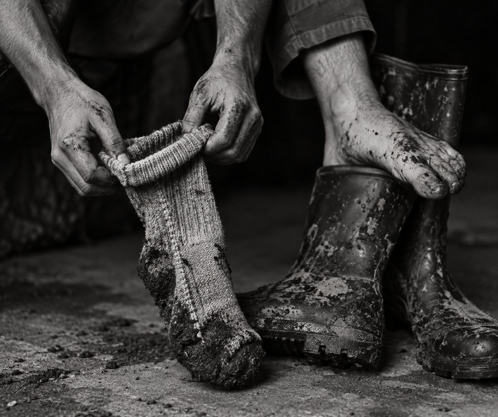

No. 002 ·
李怡志，29歲，插秧代耕業者
〈從南邊下去往北開〉
- 性別
- 男
- 年齡
- 29
- 職業
- 插秧代耕業者
- 居住地
- 台東池上錦園
場景
插秧機的輪子縫裡卡著一整圈乾掉的泥，形狀還是田的形狀。李怡志的工寮在池上錦園村產業道路的盡頭，鐵皮屋頂，前面沒有牆，兩台插秧機和一台曳引機並排停著，像三個剛下班還沒換衣服的人。我到的時候是清晨五點四十分，他已經下田一趟回來了。
工寮裡有一張摺疊桌，桌上放著一個保溫瓶、一包拆開的蘇打餅、一疊用曬衣夾夾住的秧苗訂單，最上面那張寫著地號，旁邊用原子筆寫了一個「北」字。牆上沒有日曆，掛的是一張水利會的配水時間表，用紅筆圈了幾格，有一格圈了又劃掉。遠處有水門打開的聲音，很悶，接著是水在圳溝裡找到方向的聲音。
他搬一張塑膠椅給我，自己坐在曳引機的踏板上。坐下之前他先脫掉雨鞋，將兩隻襪子翻過來重新穿，接縫朝外。我問他是不是穿反了，他說沒有，本來就這樣穿。風從沒有牆的那一面進來，秧盤上的苗一起往同一邊倒，又一起站回來。

人物介紹
李怡志二十九歲，做代耕第七年。二期稻作插秧的那三個禮拜，他一天要跑十幾塊田，從池上跑到關山，再往北到富里。田主大多七十歲以上，有的住在台北、桃園，只在電話裡講過話。他收費照分地算，秧苗另計，錢多半等到收割以後才收得到。
他高職念的是汽車修護，畢業後在台中一家保養廠待了兩年，專門換煞車皮。二十二歲那年回池上，原因他講了三個版本，一個是台中太熱，一個是老闆收掉了，一個是他阿公說插秧機沒人開。三個版本他都講得很自然，講完也沒有要選一個的意思。
附近的老農叫他「阿志仔」，年輕一點的叫他「北仔」，因為他插秧永遠從田的南邊下去，往北開，不管田長什麼形狀，不管水門在哪一邊。有一個田主在電話裡要他反過來，說從北邊開始比較順，他照做了一次，那塊田那一季倒了一片秧，他後來再也沒有答應過。
他沒有結婚，住在阿公留下的平房。平房旁邊原本有兩分地，他國中的時候家裡賣掉了，買的人住在高雄，這幾年也不太回來。那塊地現在也是他在插。
訪談
我問他開插秧機的時候在想什麼，他將保溫瓶的蓋子轉開，又轉回去。
「想……沒有在想。你要看那個苗有沒有站好，看後面，一直看後面。開車是看前面，開這個是看後面。我剛回來的時候一直撞到田埂，就是一直看前面。」
講到田會不會記事情，他笑了一下，說這是他阿公講的，他本來不信。
「田會記得機器走過去的方向。泥巴下面有一層硬的，叫犁底層，你每年從同一邊壓，它就長成那個樣子。你反過來開，上面看起來一樣，下面整個亂掉。所以不是我固執，是田固執，我只是……配合它。」
中途有一通電話，他用台語講，講到價錢的時候走遠了幾步。回來以後說是富里那邊的，然後自己又補了一句。
「有的田我收比較少，有的收比較多，那個跟面積沒關係，那個要看……看很多東西。水路啦。看很多。」
天亮了，他站起來看了一下配水表上被劃掉的那一格。
「水來的時候你一定要在。水不會等你。水不會等人，這句話我們這邊每個人都講，講到大家都不覺得它是一句話了。」

對話
——你今天第一趟插哪裡？
——錦園這邊，一塊兩分多的，田主在桃園。
——你見過他嗎？
——沒有。他每年打給我一次，匯錢一次。他講話很客氣，客氣到我有點怕他。
——怕什麼？
——怕他哪天回來看，發現田跟他想的不一樣。
——那會怎樣？
——不會怎樣。田本來就不會跟人想的一樣。
他彎腰將一盤秧苗往陰影裡推，推了兩次才推到他要的位置。
——襪子為什麼反著穿？
——接縫會磨。一天進出雨鞋幾十次，磨到晚上，腳趾這邊會紅一條。反過來就還好。我阿公也這樣穿，我以前笑他。
——他還在嗎？
——在啊。在醫院。他現在不太認得人，可是你講插秧機，他會醒一下。
——訂單上寫「北」的那一張，是哪一塊？
——那張喔。
他將訂單最上面那張抽出來，翻到背面看了一下，又夾回去，這次夾在最下面。
——那塊水很好。
——那塊你收多少？
——你們寫文章的也會問錢喔。
——不寫也可以。
——那塊我都最後插。別的插完，天比較暗了，田裡沒有人，那個時候去。從南邊下去，往北開，開到底那邊有一棵苦楝，以前比較小。
——你小時候在那邊玩過？
——我小時候不喜歡下田。泥巴會吃鞋子。
——那現在呢？
——現在穿雨鞋，給它吃沒關係。你要不要跟我去插第二趟，水門開了，再不去水就過了。
■